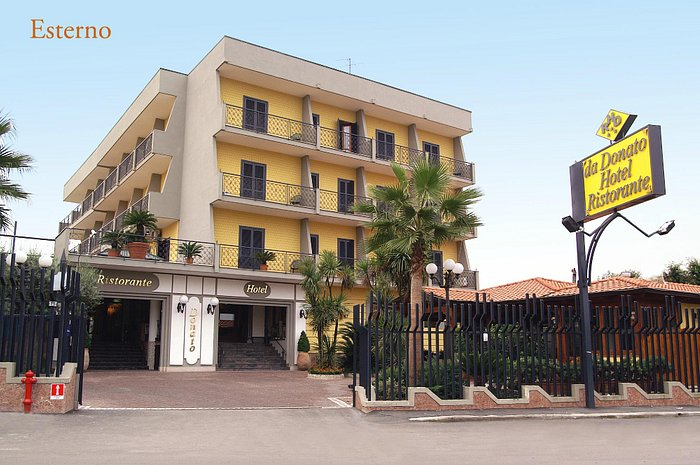

| Agenzia Viaggi | |||||||||
| Lucignolo Viaggi | Via Cesare Battisti, 2c, 25073 Bovezzo BS | Aperta dal Lunedi al Venerdi dalle 09 alle 12 e dalle 13:30 alle 16 | Telefono: 030 271 4158 | ||||||
| Sistemazione a Napoli | |||||||||
| Hotel Ristorante Donato S.R.L. | Viale della Resistenza, 73, 80012 Calvizzano NA | Prenotazioni da Lunedi alla Domenica | Sito: http://www.hotelristorantedonato.com/ | E-mail: infohoteldonato@gmail.com | Telefono: 0817132181 |  | |||
| BUS | Bassi Tours | Disponibile dalle 8:00 alle 20:00 | tel:+39030969560 | e-mail: bassitours@libero.it | |||||
| Ristoranti convenzionati | |||||||||
| Ristorante X | Pranzo ore 12 | Aperto dal Lunedì alla Domenica dalle 10:30-18:00 | Servizio minimo: piatti caldi composti da un primo, un secondo, il contorno, acqua in caraffa e pane. | Sito: https://restX.org Tel: + 34 982 080 414 E-mail: ristX@gmail.es | |||||
ACCOMPAGNATORI
___Andrea Bonardi________ classe ___4AI______
___Francesco Sicignano__________ classe ___4BI______
___Milena Valenti_________ classe ___4AT_____
___Mauro Bottini__________ classe ___5AI______
___Anna Celeste Pezzali___________ classe ___5BI_____